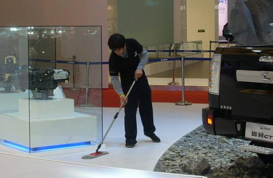

展会保洁
现在展厅越来越多，人们对展厅保洁的要求越来越高。清扫保洁工作是展厅管理的重要一环。展台卫生状况如何，直接影响着潜在客户的第一印象，影响着参展公司的社厅效益和经济效益。保洁公司要根据展厅的营业时间及客户要求，制定专业的保洁保养计划。 展厅的主要特点是：人员来往频繁，客流量大。 展厅保洁 一、日常保洁项目 1、地面清扫、牵尘、拖擦及巡回保洁。 2、垃圾筒的清倒擦拭。 3、柜台包装箱及垃圾的收集清运。 4、玻璃门、橱窗、玻璃幕及木隔断的擦拭。 5、柜台角、橱窗角、墙角、踢脚板的擦拭。 6、墙壁饰物、窗台、标牌、展示板、扶手、栏杆的擦拭。 7、商场内摆设（花架、消防栓等）的擦拭。 二、展厅保洁注意事项 1、作业安排要根据实际情况灵活掌握。当顾客较少时，抓紧拖擦地面；当顾客拥挤时，进行边角擦拭。 2、展厅客流量大，作业时要十分注意扫帚拖布等工具不能碰到顾客，不要影响顾客游逛，不要引起顾客反感。 3、展厅地面的彻底清洗，需在夜间进行，保洁人员要主动与保安人员配合，不单独行动，不作令人怀疑的行为。 三、展厅的日常清扫保洁可分为开业前、营业中、停业后 3 个段落。
- 开业前 （1）开业前展厅内无顾客，应抓紧清扫地面。 （2）开业前各柜台都在上货，应在短时间内将各柜台的包装箱、包装纸收集清运到指定地点。 （3）如果前一天停业后垃圾清运不彻底或垃圾筒来不及刷洗，此时应抓紧完成。
- 营业中 （1） 定时巡回清扫地面。巡回保洁以牵尘为主，牵尘时携带毛巾、刮刀和溶剂。 （2） 巡回牵尘时，应顺便检查垃圾筒状况，如需要清倒或擦拭时，应及时处理。 （3） 依次逐项擦拭其他。包括橱窗、墙角、墙壁饰物、摆设等
- 停业后 有的展厅停业后需彻底刷洗地面，可安排夜班作业。有的展厅停业后，只进行展厅内垃圾的收集清运。具体安排应按展厅要求确定。
上海五美是专业的上海保洁公司，提供写字楼保洁、大型综合商场保洁、工厂保洁、学校保洁、小区保洁、别墅区保洁、办公室保洁、大型游乐园保洁、开荒保洁、大理石翻新和养护、地毯清洗、水箱清洗、地面清洁、外墙清洗、物业管理、日常保洁外包等。欢迎广大新老客户前来咨询！